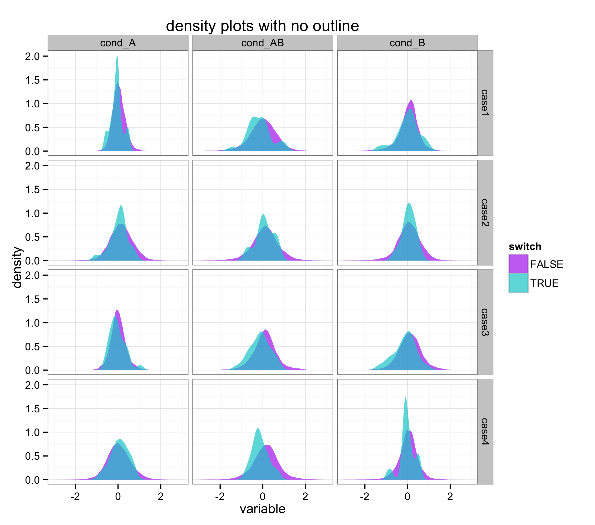

It is not:
- anything in the
aesof theggplotcall color=FALSEcolor=NULL
It is:
color=NAin thegeom_densitycall
e.g.
ggplot(data, aes(x=value, fill=grouping))+geom_density(<b>color=NA</b>)
Example (this is some real data I'm currently working with, but I've changed the labels so it's hopefully not meaningful):

Code:
ggplot(data, aes(x=variable, fill=switch)) +
geom_density(alpha=0.7, color=NA) +
facet_grid(case~condition) +
xlim(-3,3) + theme_bw() +
scale_fill_manual(values=c("darkorchid2","darkturquoise")) +
ggtitle("density plots with no outline")